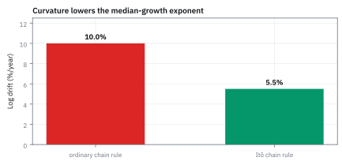
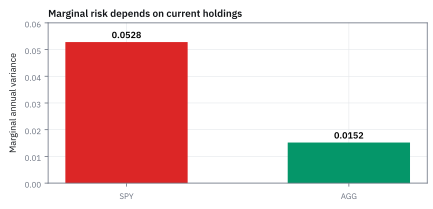
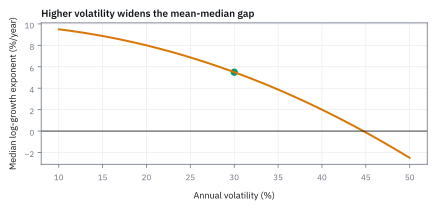

12.2 Itô's Lemma
กฎคำนวณความเปลี่ยนแปลงที่เก็บผลของความโค้งไว้ครบ
หุ้นราคา \$100 แบบจำลองให้ราคาโตเฉลี่ย 12% ต่อปี และ volatility 28% ต่อปี อีกหนึ่งปี ครึ่งหนึ่งของเส้นทางจะจบต่ำกว่าราคาเท่าไร และค่าเฉลี่ยของราคาปลายปีคือเท่าไร?
เฉลย: ครึ่งหนึ่งจบต่ำกว่า \$108.42 แต่ค่าเฉลี่ยคือ \$112.75 ต่างกัน \$4.33 และยังมีโอกาส 38.6% ที่ปลายปีราคาต่ำกว่า \$100 ถ้าใช้ chain rule ที่เรียนมา จะได้ว่าจุดกึ่งกลางก็อยู่ที่ \$112.75 ซึ่งผิด
ส่วนต่างมาจากพจน์ความโค้งที่หัวข้อ 12.1 แสดงว่าทิ้งไม่ได้ Itô's lemma คือ chain rule ที่เก็บพจน์นั้นไว้
ศัพท์ที่ใช้ในหัวข้อนี้
- Itô's lemma
- chain rule สำหรับ function ของเส้นทางสุ่ม ที่เก็บพจน์ความโค้งคูณเวลาไว้ ใช้หาการเคลื่อนที่ของ log ราคา มูลค่า option และตัวแปรที่แปลงรูปแล้ว
- stochastic differential equation (SDE)
- สมการที่บอกการขยับในช่วงสั้นเป็นส่วนที่คาดได้คูณเวลา บวกส่วนสุ่มคูณการขยับของ Brownian motion ใช้เขียนแบบจำลองราคาและอัตราดอกเบี้ย
- drift
- อัตราการเปลี่ยนเฉลี่ยต่อหน่วยเวลาในแบบจำลอง ใช้กำหนดทิศที่เส้นทางเอียงไปโดยเฉลี่ย
- volatility
- standard deviation ของ log return ต่อหนึ่งปี ใช้กำหนดความกว้างของราคาในอนาคตและขนาดของพจน์ความโค้ง
- Geometric Brownian Motion (GBM)
- แบบจำลองที่ราคาเปลี่ยนเป็นเปอร์เซ็นต์ด้วย drift คงที่และ noise คงที่ ใช้เป็นแบบจำลองมาตรฐานของราคาหุ้น และเป็นฐานของสูตร Black–Scholes (บทที่ 13)
- Taylor expansion
- การเขียนค่าของ function ใกล้จุดหนึ่งเป็นค่าเดิม บวกความชันคูณระยะ บวกความโค้งคูณระยะกำลังสอง ใช้หาว่าพจน์ไหนเก็บ พจน์ไหนทิ้ง
- log return
- log ของราคาปลายช่วงหารราคาต้นช่วง ใช้เพราะบวกข้ามช่วงเวลาได้ และทำให้ GBM กลายเป็นรูประฆัง
- median
- ค่าที่ครึ่งหนึ่งของผลลัพธ์อยู่ต่ำกว่า อีกครึ่งอยู่สูงกว่า ใช้บอกผลกึ่งกลางที่ไม่ถูกหางขวาดึงเหมือนค่าเฉลี่ย
- lognormal distribution
- รูปแบบของตัวเลขบวกที่ log ของมันเป็นรูประฆัง ใช้บอกว่าราคาปลายทางภายใต้ GBM กระจายอย่างไร
- volatility drag
- การที่ความผันผวนลดอัตราโตของจุดกึ่งกลางลงครึ่งหนึ่งของ σ² ใช้อธิบายว่าทำไมสินทรัพย์ที่เหวี่ยงแรงโตช้ากว่าที่ค่าเฉลี่ยบอก
- gamma
- ความโค้งของมูลค่า option ต่อราคาหุ้น ใช้วัดว่าพจน์ความโค้งของ Itô ให้กำไรหรือขาดทุนแค่ไหน (บทที่ 13)
สัญลักษณ์ที่ใช้ในหัวข้อนี้
| สัญลักษณ์ | ความหมาย | หน่วย |
|---|---|---|
| $X_t$ | ตัวแปรที่เดินแบบสุ่ม ณ เวลา $t$ | หน่วยของตัวแปร |
| $a(t,X_t)$ | ส่วนที่คาดได้ต่อปี (drift) | หน่วย/ปี |
| $b(t,X_t)$ | ขนาดของส่วนสุ่ม | หน่วย/$\sqrt{\text{year}}$ |
| $f(t,x)$ | function ที่แปลงตัวแปรเป็นสิ่งที่สนใจ | หน่วยของผลลัพธ์ |
| $f_t$, $f_x$, $f_{xx}$ | ความชันตามเวลา ความชันตามตัวแปร และความโค้งตามตัวแปร | หน่วยผลลัพธ์ต่อหน่วยของตัวแปรที่ใช้ |
| $W_t$ | Brownian motion มาตรฐาน | $\sqrt{\text{year}}$ |
| $S_t$, $S_0$ | ราคาหุ้น ณ เวลา $t$ และวันนี้ | USD/หุ้น |
| $\mu$ | drift ของราคาต่อปี | 1/ปี |
| $\sigma$ | volatility ต่อปี | $1/\sqrt{\text{year}}$ |
| $T$ | ระยะเวลาที่มองไปข้างหน้า | ปี |
| $Z$ | ตัวเลขสุ่มจากระฆังมาตรฐาน | ไม่มีหน่วย |
ที่มาที่ไป: คณิตศาสตร์ที่คิดขึ้นในญี่ปุ่นช่วงสงคราม
Kiyosi Itô สร้าง calculus ชุดนี้ในญี่ปุ่นช่วงทศวรรษ 1940 แทบไม่ได้ติดต่อกับวงวิชาการนอกประเทศเลย ปัญหาที่เขาแก้คือ chain rule ใช้กับเส้นทางสุ่มไม่ได้ เพราะเส้นทางแบบนั้นไม่มีความชัน
เขาไม่ได้ซ่อมกฎเดิม แต่สร้างกฎใหม่ที่ยอมรับตั้งแต่ต้นว่าพจน์อันดับสองทิ้งไม่ได้ งานนี้ไม่ได้ตั้งใจให้ใช้กับการเงิน แต่สามสิบปีต่อมามันกลายเป็นเครื่องมือหลักของการตั้งราคา derivative ทั้งหมด
ขั้นที่ 1 — สี่ก้าวด้วยมือ: chain rule เดิมทำหายไปเท่าไร
ก่อนกฎทั่วไป ลอง chain rule ที่เรียนมากับ f(W) = W² บนเส้นทางสั้น ๆ สี่ก้าว แล้วเทียบกับค่าจริง
บรรทัดที่สามคือค่าที่เปลี่ยนไปจริง อ่านจากปลายลบต้น บรรทัดที่สี่ถึงห้าคือสิ่งที่ chain rule เดิมให้ ซึ่งได้ศูนย์ ส่วนที่หายไป 1 หน่วยเท่ากับผลรวมกำลังสองของก้าวพอดี
ถ้า W เป็นเส้นเรียบ ส่วนนี้จะหายไปเอง แต่หัวข้อ 12.1 แสดงว่ากับเส้นสุ่มมันไม่หาย หัวข้อ 12.3 จะใช้เส้นทางเดียวกันนี้อีกครั้ง ตอนคุยเรื่องกำไรปลอมจากการมองอนาคต
ขั้นที่ 2 — กฎ (dW)² = dt ด้วยตัวเลข: ซอยหนึ่งปีเป็น 10,000 ท่อน
ใช้เส้นสุ่มแบบง่ายที่สุด แต่ละท่อนขยับขึ้นหรือลงเท่ากับรากของความยาวท่อน แล้วบวกผลคูณทุกแบบทั้งปี เทียบกับเส้นตรงที่ขยับท่อนละ dt
เครื่องหมายบวกลบหายไปตอนหากำลังสอง ผลรวมกำลังสองจึงได้ 1 เท่ากับเวลาทั้งปีพอดี ไม่ว่าเส้นทางจะออกหัวหรือก้อยกี่ครั้ง ส่วนผลรวมอื่นเล็กลงเรื่อย ๆ เมื่อซอยถี่ขึ้น
ขั้นที่ 3 — นิยามของ stochastic differential equation ที่ใช้ตลอดบท
บรรทัดนี้เป็นนิยามของรูปสมการ ในช่วงเวลาสั้น ๆ ตัวแปรขยับด้วยสองส่วน คือส่วนที่คาดได้ตามเวลา กับส่วนสุ่มตามแรงกระแทก ขนาดของทั้งสองส่วนขึ้นกับเวลาและค่าปัจจุบันได้
ในช่วงสั้น dt ตัวแปรขยับเท่ากับ a คูณเวลา บวก b คูณการขยับของเส้นสุ่ม ส่วนสุ่มมีขนาดตามรากของเวลา ไม่ใช่ตามเวลา นี่คือเหตุที่มันทิ้งไม่ได้เมื่อยกกำลังสอง
ขั้นที่ 4 — Taylor expansion ถึงอันดับสอง: ห้ามตัดพจน์ที่สอง
กระจายแบบเดียวกับที่เรียนมา แล้วดูทีละพจน์ว่าอันไหนรอด เหตุผลของพจน์ที่เก็บไว้คือการคำนวณในหัวข้อ 12.1 ไม่ใช่ธรรมเนียม
กำลังสองของเวลาและผลคูณของเวลากับการขยับหดเร็วกว่าเวลา จึงหายไปเหมือนในวิชาปกติ จุดที่ต่างคือกำลังสองของการขยับ ซึ่งมีขนาดเท่า dt พอดี เราจึงเก็บสามพจน์ ไม่ใช่สองพจน์แบบ chain rule เดิม
ขั้นที่ 5 — ตารางคูณของ Itô: กฎสามข้อที่เปลี่ยนทุกอย่าง
ก่อนกาง (dX)² ต้องรู้ว่าการคูณของเล็ก ๆ สองตัวให้อะไร สามบรรทัดนี้คือตัวเลขของขั้นที่ 2 เขียนเป็นกฎ
สองบรรทัดแรกไม่แปลก ของเล็กคูณของเล็กยิ่งเล็กจนทิ้งได้ บรรทัดสามคือเหตุที่ต้องเรียนวิชาใหม่ กำลังสองของก้าวสุ่มมีขนาดเท่าเวลา และเป็นที่มาของ −½σ² ทุกครั้งที่เราเจอมัน
ขั้นที่ 6 — กำลังสองของการขยับเหลือแค่ส่วนสุ่ม
กางกำลังสองออกให้ครบสามพจน์ แล้วใช้ตารางตัดทิ้งทีละพจน์
สิ่งที่รอดมามีแต่ b ซึ่งเป็นขนาดของความสุ่ม ส่วน drift หายไปหมด พจน์พิเศษที่จะโผล่มาจึงเกิดจากความผันผวนล้วน ๆ ไม่เกี่ยวกับทิศทางเลย
ขั้นที่ 7 — ประกอบเป็น Itô's lemma
รวมทุกพจน์ที่เหลือ ได้กฎที่ใช้ตลอดบทนี้และบทถัดไป ไม่มีของใหม่นอกจากการแทนค่าและจัดกลุ่ม
แทนสมการของขั้นที่ 3 และผลของขั้นที่ 6 แล้วจัดกลุ่ม วงเล็บแรกคือส่วนที่คาดได้ ก้อนหลังคือความผันผวน ของใหม่คือครึ่งหนึ่งของ b² คูณความโค้ง
สามบรรทัดล่างตรวจกับขั้นที่ 1 เส้นทาง W² ได้ dt เพิ่มมาต่อหน่วยเวลา ซึ่งคือส่วนที่หายไปจาก chain rule เดิมพอดี
ขั้นที่ 8 — ของที่โจทย์ให้: หุ้นแบบ GBM และทำไมต้องใช้ log
หุ้นราคา \$100 มี drift 12% และ volatility 28% ต่อปี ทั้งสองพจน์ของสมการมี S คูณอยู่ เอา S หารทั้งสองข้างได้การเปลี่ยนเป็นเปอร์เซ็นต์ ซึ่งมีพฤติกรรมเรียบง่าย
ตัวที่เรียบง่ายคืออัตราส่วน ไม่ใช่ผลต่างเป็นดอลลาร์ แก้สมการตรง ๆ ไม่ได้เพราะ S โผล่ทั้งสองข้าง function ที่เปลี่ยนการคูณเป็นการบวกคือ log จึงเลือก f(S) = ln S
ขั้นที่ 9 — ความชันและความโค้งของ log
หาสามตัวที่สูตรต้องใช้ แล้วเขียน a และ b ของ GBM
log ไม่มีเวลาอยู่ในตัว เวลาเข้ามาผ่านราคาเท่านั้น ความชันคือหนึ่งส่วนราคา ความโค้งติดลบ แปลว่า log โค้งคว่ำ และนี่คือเหตุที่จุดกึ่งกลางโตช้ากว่าค่าเฉลี่ย
ขั้นที่ 10 — การเคลื่อนที่ของ log ราคา: S ตัดกันหมด
แทนทุกอย่างลงในกฎของขั้นที่ 7 ทีละช่อง แล้วดูว่า S หายไปจากทุกพจน์อย่างไร
ช่องที่สองให้ drift เดิม ช่องที่สามให้ −½σ² จากความโค้งติดลบคูณกำลังสองของการขยับ ถ้าตารางคูณบรรทัดสามเป็นศูนย์แบบวิชาเดิม พจน์นี้จะไม่มี log ราคาจึงโต 8.08% ต่อปี ไม่ใช่ 12%
Figure 12.2a — chain rule ธรรมดา เทียบกับของ Itô

chain rule เดิมให้ log ราคาโต 12% ต่อปี Itô ให้ 8.08% ส่วนต่าง 3.92 จุด คือพจน์ความโค้งของ log ที่ chain rule เดิมมองไม่เห็น
ขั้นที่ 11 — รวมตลอดช่วงเวลาแล้วยกกลับด้วย exponential
ฝั่งขวาไม่มี S เหลืออยู่แล้ว จึงรวมตลอดช่วงเวลาได้ตรง ๆ
Brownian motion เริ่มที่ศูนย์ และ W ณ เวลา T เป็นรูประฆังที่ variance เท่ากับ T จึงเขียนเป็นรากของ T คูณก้อนมาตรฐานได้ ใส่ exponential ทั้งสองข้าง ราคาจึงติดลบไม่ได้ นี่คือสูตรที่ใช้จำลองจริงในหัวข้อ 12.8
ขั้นที่ 12 — จุดกึ่งกลางของราคาปลายปี
ก้อนมาตรฐานมีจุดกึ่งกลางที่ศูนย์ และ exponential ไม่เปลี่ยนลำดับของตัวเลข จุดกึ่งกลางของราคาจึงได้จากการใส่ Z = 0
ครึ่งหนึ่งของเส้นทางจบต่ำกว่า \$108.42 โตแค่ 8.42% ทั้งที่ drift ของราคาคือ 12% ส่วนที่หายไปคือพจน์ความโค้งของขั้นที่ 10
ขั้นที่ 13 — ค่าเฉลี่ยของราคาปลายปี: เติมกำลังสองให้ครบ
ต้องการค่าเฉลี่ยของ $e^{cZ}$ เขียนเป็น integral กับระฆัง แล้วจัดเลขชี้กำลังให้เป็นกำลังสองสมบูรณ์
cz − z²/2 เท่ากับ c²/2 − (z − c)²/2 integral ที่เหลือคือพื้นที่ใต้ระฆังที่เลื่อนไปอยู่ที่ c ซึ่งเท่ากับ 1 พจน์ +½σ² หักล้างกับ −½σ² พอดี ค่าเฉลี่ยจึงโตด้วย drift เต็ม 12%
ค่าเฉลี่ยสูงกว่าจุดกึ่งกลาง \$4.33 เพราะเส้นทางไม่กี่เส้นที่วิ่งขึ้นไปไกลดึงค่าเฉลี่ยขึ้น ส่วนจุดกึ่งกลางไม่ถูกดึง
Figure 12.2b — mean กับ median แยกจากกัน

ที่ volatility 28% ค่าเฉลี่ยของราคาปลายปีอยู่ที่ \$112.75 แต่จุดกึ่งกลางอยู่ที่ \$108.42 หางขวาดันค่าเฉลี่ยขึ้นโดยไม่ได้ย้ายจุดกึ่งกลางเท่ากัน
ขั้นที่ 14 — โอกาสขาดทุนหลังหนึ่งปี แม้ drift เป็นบวก
ราคาปลายปีต่ำกว่า \$100 เมื่อ log ของอัตราส่วนติดลบ แปลงเป็นเงื่อนไขบนก้อนมาตรฐาน แล้วอ่านจากระฆัง
หุ้นที่แบบจำลองบอกว่าโตเฉลี่ย 12% ต่อปี ยังมีโอกาสเกือบสี่ในสิบที่จะขาดทุนในปีเดียว ตัวเลขนี้ใช้ drift ของ log คือ 8.08% ถ้าเผลอใช้ 12% จะได้โอกาสต่ำเกินจริง
ขั้นที่ 15 — volatility drag: ความผันผวนกัดการโตของจุดกึ่งกลาง
ตรึง drift ของราคาไว้ที่ 12% แล้วเปลี่ยนความผันผวนอัตราโตของจุดกึ่งกลางคือ drift ลบครึ่งหนึ่งของ σ²
ที่ volatility 49% จุดกึ่งกลางไม่โตเลย ทั้งที่ค่าเฉลี่ยยังโต 12% ต่อปี นี่เป็นผลของแบบจำลอง ไม่ใช่ค่าธรรมเนียมที่ถูกหักจริง แต่มันอธิบายว่าทำไมพอร์ตที่เหวี่ยงแรงมักโตช้ากว่าที่ค่าเฉลี่ยบอก
Figure 12.2c — volatility drag กดเลขชี้กำลังของ median

เมื่อ drift ของราคาตรึงที่ 12% การเพิ่มความผันผวนจาก 10% เป็น 60% ลดอัตราโตของจุดกึ่งกลางจาก 11.5% จนติดลบ และผ่านศูนย์ที่ราว 49%
ขั้นที่ 16 — ทั้งบทนี้คือพจน์เดียวที่ไม่ยอมหาย
สรุปความต่างระหว่าง chain rule สองแบบในที่เดียว พจน์ความโค้งนี้จะกลายเป็น gamma บนโต๊ะ option ในบทที่ 13
ทุกอย่างในอนุกรมเหมือนที่เคยเรียน ต่างกันที่ขนาดของกำลังสองของการขยับ เส้นเรียบทิ้งได้ เส้นสุ่มทิ้งไม่ได้ ทุกอย่างที่เหลือในบทนี้คือการลากพจน์นั้นผ่านสูตรต่าง ๆ ไม่ใช่กฎใหม่
คำตอบ ตรวจเอง และแปลว่าอะไร
โจทย์ให้อะไรมาบ้าง: หุ้น \$100 แบบ GBM drift 12% volatility 28% ต่อปี มองไปหนึ่งปี
คำตอบ: (ก) log ราคาเดินด้วย drift 0.12 − 0.0392 = 0.0808 และความผันผวน 0.28 (ข) จุดกึ่งกลาง \$108.42 ค่าเฉลี่ย \$112.75 (ค) โอกาสจบต่ำกว่า \$100 คือ 38.6% (ง) ถ้าใช้ chain rule เดิม จะทำนายจุดกึ่งกลางเท่ากับค่าเฉลี่ย สูงเกินจริง \$4.33 ต่อหุ้น
ตรวจเองใน 10 วินาที: 0.28² = 0.0784 ครึ่งหนึ่งคือ 0.0392 และ $e^{0.0808}$ ประมาณ 1 + 0.0808 + 0.0033 = 1.0841
แปลว่าอะไร: ค่าเฉลี่ยตอบคำถามว่าเฉลี่ยทุกเส้นทางได้เท่าไร จุดกึ่งกลางตอบว่านักลงทุนทั่วไปจะเจออะไร สองคำถามนี้ต่างกันเพราะพจน์ความโค้ง
ลองเอง — หุ้น \$200 drift 10% volatility 30%
โจทย์ให้อะไรมาบ้าง: หุ้นราคา \$200 แบบ GBM drift 10% volatility 30% ต่อปี มองไปหนึ่งปี
คำตอบ: พจน์ความโค้งคือครึ่งหนึ่งของ 0.09 เท่ากับ 0.045 log ราคาจึงโต 0.055 ต่อปี จุดกึ่งกลางคือ \$211.31 ค่าเฉลี่ยคือ \$221.03 ต่างกัน \$9.72 และโอกาสขาดทุนคือพื้นที่ระฆังทางซ้ายของ −0.183 เท่ากับ 42.7%
ตรวจเองใน 10 วินาที: ค่าเฉลี่ยต้องสูงกว่าจุดกึ่งกลางเสมอ และช่องว่างต้องกว้างกว่ากรณี 28% เพราะความผันผวนสูงกว่า
แปลว่าอะไร: volatility สูงขึ้นแค่ 2 จุด แต่ drift ต่ำกว่า 2 จุด โอกาสขาดทุนในหนึ่งปีจึงขึ้นจาก 38.6% เป็น 42.7%
กับดัก: เรียก μ − σ²/2 ว่า expected return
ค่านี้คือ drift ของ log ราคา และเป็นอัตราโตของจุดกึ่งกลาง ไม่ใช่อัตราโตของค่าเฉลี่ยของราคา ถ้าตารางคำนวณหนึ่งใช้ 8.08% เป็นผลตอบแทนคาดหวัง แต่อีกตารางใช้ 12% ตัวเลขสองตารางจะไม่ตรงกันแม้ใช้แบบจำลองเดียวกัน ต้องเขียนกำกับเสมอว่า μ ในตารางหมายถึงอะไร
ข้อจำกัด: วิธีนี้สมมติอะไร และของจริงเป็นอย่างไร
| เรื่อง | วิธีนี้สมมติว่า | ของจริงเป็นอย่างไร | ผลที่ตามมาเวลาใช้งาน |
|---|---|---|---|
| ความเรียบ | function หาความโค้งได้ | payoff ของ option หักมุมที่ strike | ใช้ตรงจุดหักมุมไม่ได้ ต้องจัดการเป็นกรณีพิเศษ |
| ไม่มีการกระโดด | กระบวนการต่อเนื่อง | ราคากระโดด | ต้องใช้กฎฉบับขยายที่มีพจน์สำหรับการกระโดดเพิ่ม |
| การตีความ | เป็นการคูณตัวเลขเล็ก ๆ | เป็นข้อความเรื่องผลรวมเมื่อซอยถี่ขึ้น | การคิดว่าเป็นการคูณธรรมดาทำให้เข้าใจผิดเวลาเจอกรณีที่ซับซ้อนขึ้น |
แถวแรกเป็นปัญหาจริงตอนคำนวณความไวของ option ที่ราคาใกล้ strike ในวันหมดอายุ
แล้วเอาไปใช้ทำอะไรได้จริงบ้าง
ใช้หาว่ามูลค่า option ขยับอย่างไรเมื่อราคาหุ้นขยับ ซึ่งเป็นก้าวแรกของสูตร Black–Scholes ในบทที่ 13 และใช้แปลงราคาไป log return แล้วกลับ ซึ่งเป็นการแปลงที่ทำบ่อยที่สุดในงานจริง
ใช้อธิบายที่มาของพจน์ครึ่งหนึ่งของ variance ที่โผล่ในทุกสูตร และใช้ตรวจตารางคำนวณว่าใช้ drift ของราคาหรือ drift ของ log ให้ถูกที่
โค้ดตรวจ Itô's lemma กับหุ้น GBM ด้วยตัวเลขและการจำลอง
import numpy as np
from math import exp, sqrt
from statistics import NormalDist
W = np.array([0, 0.5, 0, 0.5, 1.0]); dW = np.diff(W)
assert W[-1] ** 2 == 1 and 2 * (W[:-1] * dW).sum() == 0 and (dW ** 2).sum() == 1
n = 10_000
assert abs(n * (1 / n) ** 2 - 1e-4) < 1e-15 and abs(n * (1 / n) * sqrt(1 / n) - 0.01) < 1e-12
mu, sig, S0 = 0.12, 0.28, 100
g = mu - sig ** 2 / 2
assert abs(g - 0.0808) < 1e-12 and abs(S0 * exp(g) - 108.42) < 5e-3 and abs(S0 * exp(mu) - 112.75) < 5e-3
assert abs(NormalDist().cdf(-g / sig) - 0.386) < 5e-4
assert abs(0.12 - 0.5 * 0.10 ** 2 - 0.115) < 1e-12 and abs(0.12 - 0.5 * 0.5 ** 2 + 0.005) < 1e-12
assert abs(sqrt(0.24) - 0.490) < 5e-4
rng = np.random.default_rng(15)
steps, paths = 500, 10_000
dWs = rng.standard_normal((paths, steps)) * sqrt(1 / steps)
S = S0 * np.prod(1 + mu / steps + sig * dWs, axis=1) # small steps of dS = mu S dt + sigma S dW
exact = S0 * np.exp(g + sig * dWs.sum(1))
assert abs(np.median(S) / 108.42 - 1) < 0.02 and abs(S.mean() / 112.75 - 1) < 0.01
assert np.abs(np.log(S / exact)).mean() < 0.01โค้ดตรวจสี่ก้าวด้วยมือว่า chain rule เดิมทำหาย 1 หน่วย คิด median 108.42 mean 112.75 และโอกาสขาดทุน 38.6% แล้วเดินสมการ GBM ทีละขั้นเล็ก ๆ ได้ราคาตรงกับสูตรที่ได้จาก Itô's lemma
สรุปที่ใช้ได้จริง
- Itô's lemma คือ chain rule ที่เติมครึ่งหนึ่งของ b² คูณความโค้งเข้าไปใน drift
- กฎ (dW)² = dt มาจากผลรวมกำลังสองที่ไม่หาย ส่วน dt² และ dt dW หายไป
- ภายใต้ GBM log ราคาโตด้วย μ − σ²/2 แต่ค่าเฉลี่ยของราคาโตด้วย μ เต็ม
- หุ้น \$100 drift 12% volatility 28%: จุดกึ่งกลาง \$108.42 ค่าเฉลี่ย \$112.75 โอกาสขาดทุนในหนึ่งปี 38.6%
- ผลนี้อาศัย GBM ที่ parameter คงที่ ไม่รวมการกระโดด เงินปันผล หรือความผันผวนที่เปลี่ยนตามเวลา